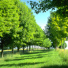
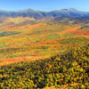

Discover white sand beaches amd lighthouses, brilliant fall foliage, expansive lakes, panoramic mountain views, and dockside restaurants with delicious seafood chowder, lobster,
and blueberry pie.
In New England, you'll find a wealth of diverse travel experiences within just a few hours drive of Boston's Logan International Airport.
Discover why visitors travel back to New England again and again.
-

Spring
Maple sugaring cues the advent of spring, a showcase for New England's love of gardening. Festivals celebrate daffodils, tulips, lilac, roses and dogwood.
-
Summer
Since New England is on the same latitude as Rome, summers are still hot. Hit the beaches from Rhode Island to Maine; cool off on the lakes and in forests.
-

Fall
New England's fall foliage is legendary. In autumn, the warm days and crisp nights help the leaves change from green to a tapestry of color.
-
Winter
Go in winter for snow and crisp sunny days, for skiing and snowboarding in the mountains, city breaks with great shopping, theatre and museums.
| Massachusetts | Rhode Island | New Hampshire |
| Vermont | Maine | Conneticut |
| New York | Pennsylvania | New Jersey |